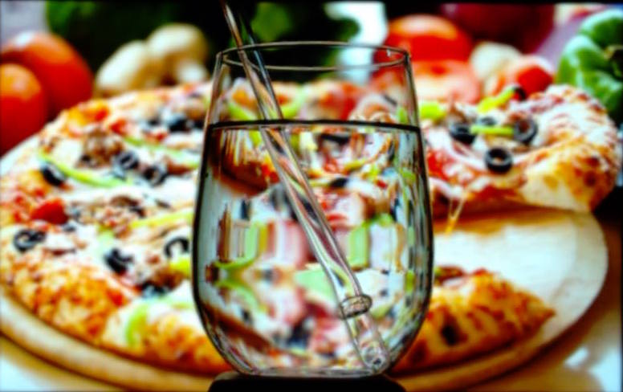
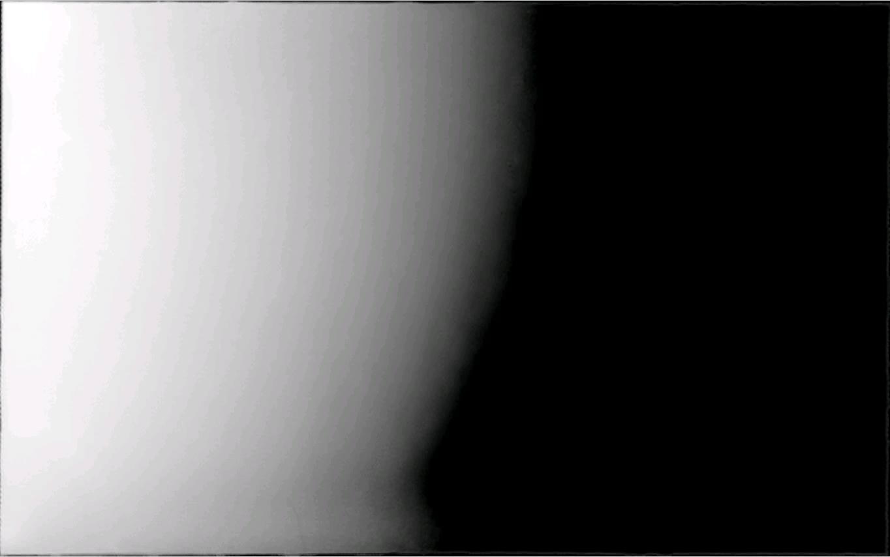
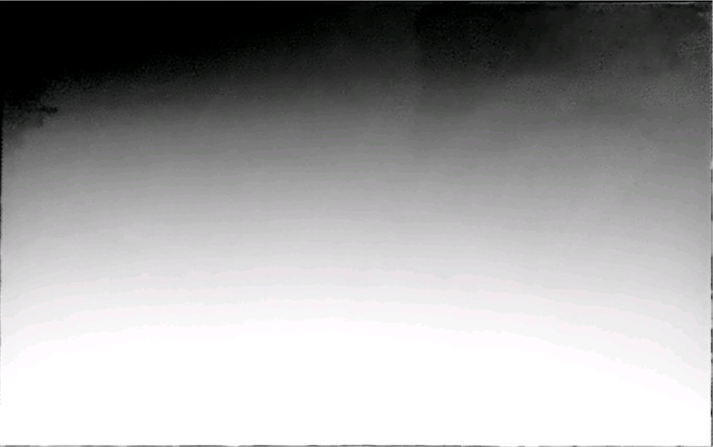
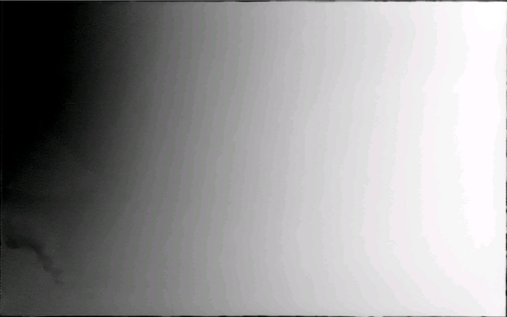
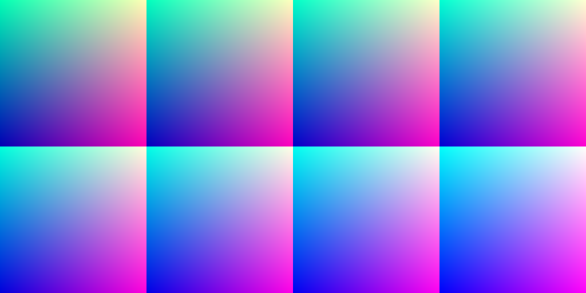
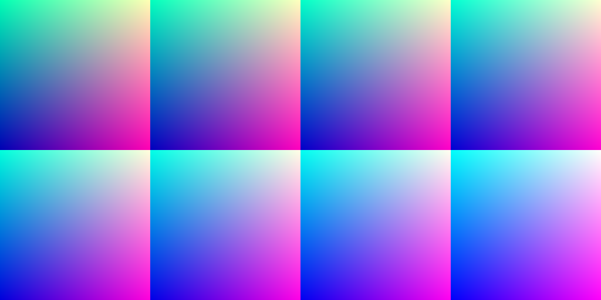
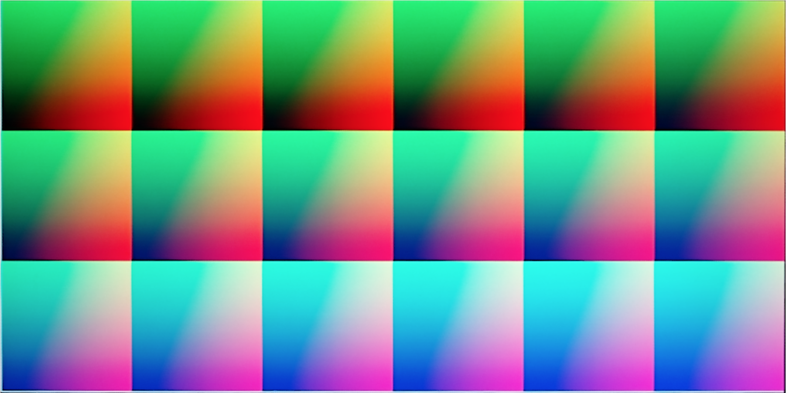

A. Attempts using Lytro-Illum Camera
To calibrate the camera positions, we tried to use Lytro-Illum camera. It is conceptually an array of cameras taking pictures at the same time. So a single shot with Lytro camera would give u multiple perspectives from a calibrated array of cameras. Promising as it seems, our first attempt, however, was not very sucessful. Figure ?? a shows the result.
b)
c)
The reason for this is that Lytro has bad chromatic abberation. So we analysed the chromatic abberation, obtained a better color wash pattern in Sec. ?? and tried to correct the color in Sec. ??. Nevertheless, too many colors are captured as the same in Lytro that the color correction didn't work. But we discovered that multiple patterns would help to obtain better mapping as is described in Sec. ??.
Lytro's Chromatic Abberation and New Pattern
 b)
b)c) d) e)
Colors captured by Lytro camera differ a lot from the reality. Figure ?? a) shows the pattern generated by the computer. b) is the picture taken by Lytro. The distinction is more obvious if we look at Figure ?? c-e) which shows each channels of the Lytro photo separately. Since we use a color wash with R,G,B changes from 0 to 255 linearly, we are supposed to see a linear black and white color gradient. However, there is an obvious color cut-off in each channel. Consider the red channel, for example. Many positive values in red channels are observed as zero. Therefore, we restrained each channel of our color wash pattern to avoid the values below the cut-off, as show in fig. ??.

Color Correction
We did color correction to map the observed colors by Lytro back to the original color generated by computer. To do this, we first take pictures of color wash grids as in fig.??, where red (R) and greens (G) runs from 0 to 255 within each grid and blue (B) from different grids are 0, 10, ... 250. We then took pictures of these color washs.
 b)
b) c) d)
e)
These patterns and pictures can give us a color map from the pattern color to the observed color by Lytro. The mapping can be considered as a cube of color, indexed by the pattern color, holding the observed colors as values. And then we interpolated the observed color to fill the whole mapping cube. More specifically, given pattern color [r,g,b] not included in our color wash, we linear interpolated it using another two colors, [r,g,b1] and [r,g,b2], with the same R and G and the closest B. Then we inverted the mapping to obtain the mapping from the observed color to the original pattern color. If multiple pattern colors map to the same observed color, we average them.

Multiple Patterns Help to Reduce Effect of Color Abberation
Fig. ??b shows the result using only single corresponding pattern in 4a. Fig. ?? shows the result when both patterns are taking into account. Consider the similarity of position p1 on the cup with position p2 on the background. Let the two patterns be T1 and T2, the two pictures with object be C1, C2, and Ti(p) (or Ci(p)) denotes the color on Ti (or Ci) at position p. We define the similarity as S(p1,p2) = cos(C1(p1), T1(p2)) + cos(C2(p1), T2(p2)). Possibly, some parts that are not discernible using one pattern is told apart with another texture.
 a2)
a2) b1)